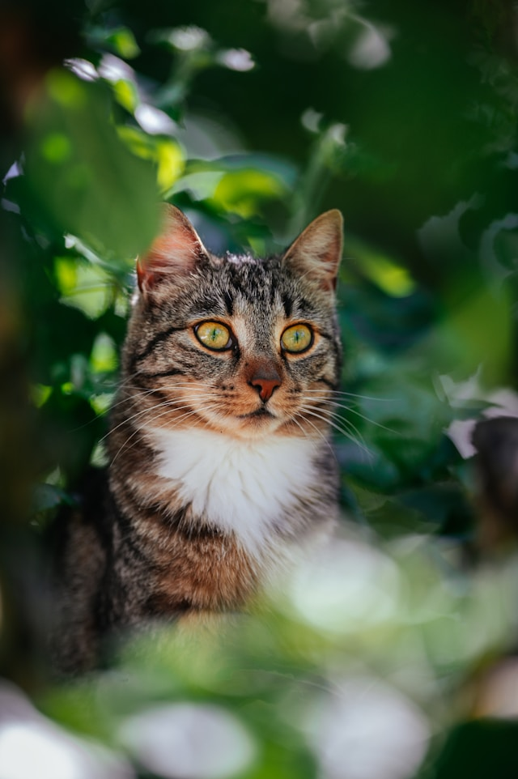

Sobre
Na ProntVet, nossa paixão pelos animais vai além do cuidado. Somos uma equipe dedicada de veterinários e especialistas que, com carinho e profissionalismo, cuidam da saúde e bem-estar dos seus pets. Com atendimento personalizado, equipamentos modernos e um ambiente acolhedor, garantimos que seu melhor amigo receba o tratamento que merece. Seja em consultas de rotina, procedimentos cirúrgicos ou emergências, estamos aqui para oferecer o melhor cuidado veterinário para quem você ama.
